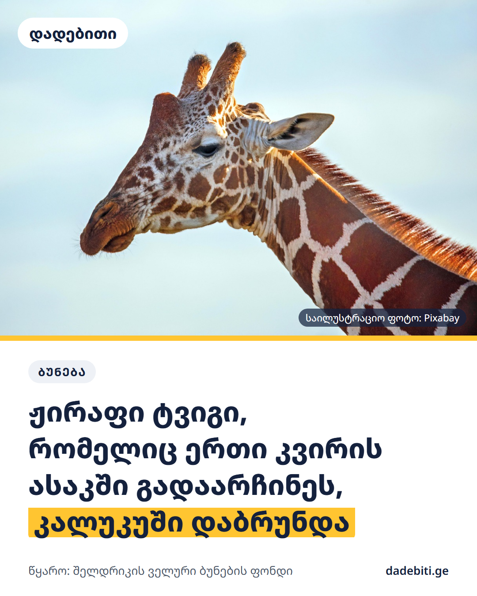

ჟირაფი ტვიგი, რომელიც ერთი კვირის ასაკში გადაარჩინეს, კალუკუში დაბრუნდა

ჟირაფი ტვიგი ერთი კვირის ასაკში, 2021 წლის 29 ნოემბერს, წავოს აღმოსავლეთის ეროვნული პარკიდან იხსნეს. მას შელდრიკის ველური ბუნების ფონდის მეთვალყურეები მიაკვლიეს, როცა ის ზებრების გუნდს მიჰყვებოდა. დედა მის გვერდით არ ჩანდა, ხოლო ღამე მოახლოვდა, ამიტომ ფონდმა ტვიგი ახლოს მდებარე სანერსერში მიიყვანა. აქ ოთხი წელი გაიზარდა, სხვა ობოლ ცხოველებთან ერთად. 2025 წლის ნოემბერში ტვიგი ველურ ბუნებას დაუბრუნდა და თავის ჯოგს შეუერთდა. 2026 წლის 5 ივლისს ის კალუკუში ისევ მოვიდა, თითქოს არასდროს წასულა. ყოფილ მეთვალყურეებთან ერთად მან მთელი დღე გაატარა.
წყარო: შელდრიკის ველური ბუნების ფონდი · ორიგინალი ამბავი